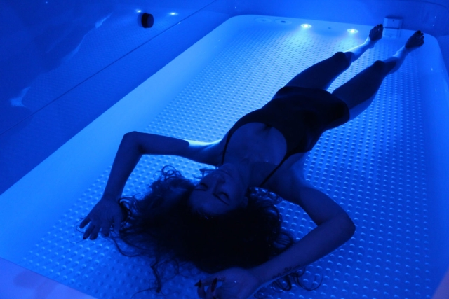
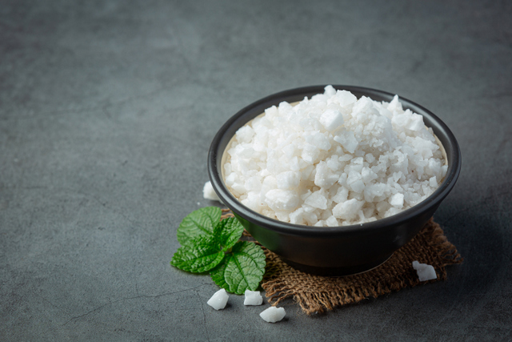
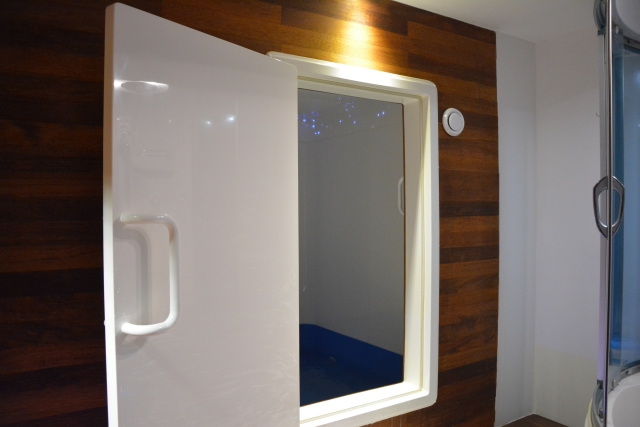
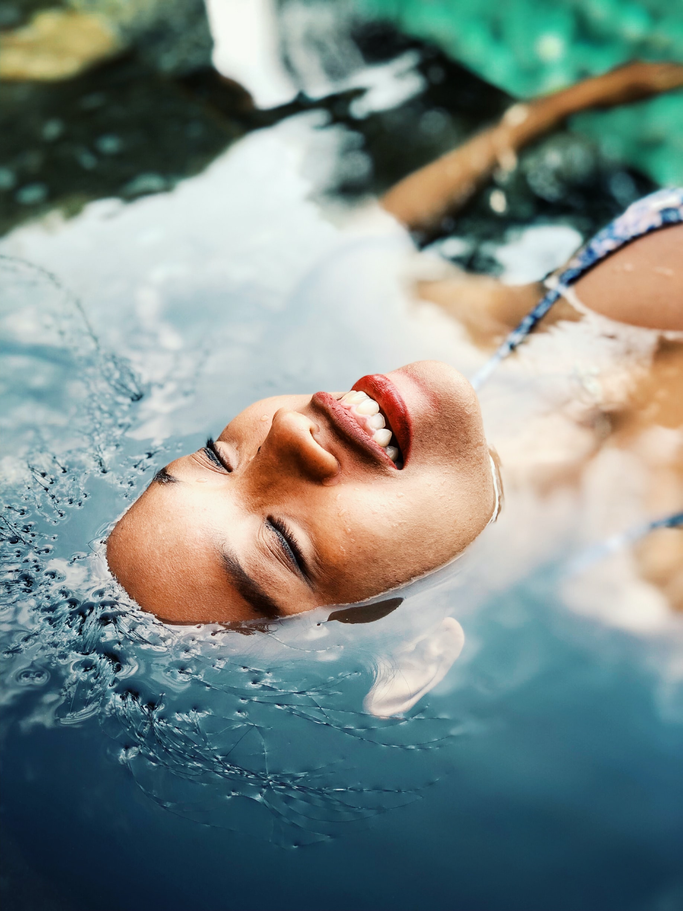
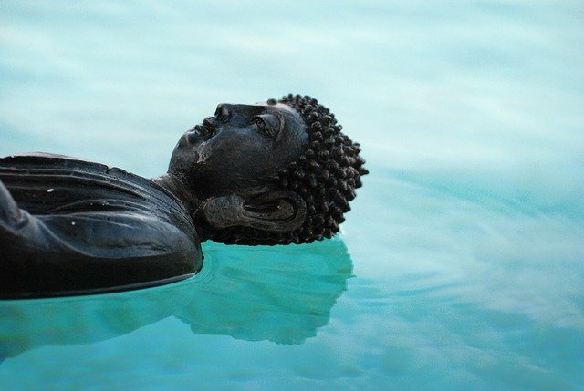
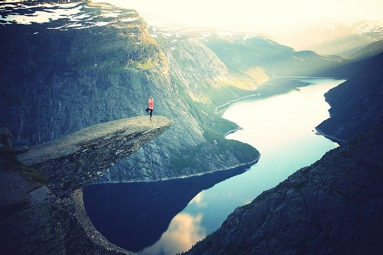
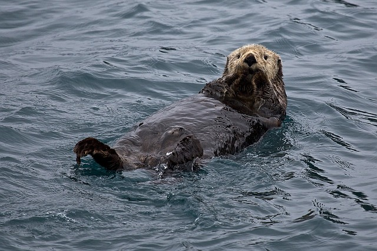

FLOATING – GŁĘBOKI RELAKS W STANIE NIEWAŻKOŚCI

Floating to najprzyjemniejsza terapia wykorzystywana w rehabilitacji, kosmetologii, sporcie i psychofizjologii. Głęboki relaks, magiczne doznania i uzdrawiające działanie zapewnia stan nieważkości osiągany dzięki leżeniu na powierzchni wody nasyconej wysoko stężonym roztworem leczniczych soli. Wywołuje to odczucia podobne do tych, których doświadcza dziecko w łonie matki.
Regeneracja pięć razy większa niż podczas snu!

Wszystko zaczęło się w latach 60-tych. XX w., kiedy neurolog dr John C. Lilly stworzył prototyp komory deprywacyjnej, czyli urządzenia odizolowującego człowieka od bodźców zewnętrznych. W latach późniejszych, jego praca stała się podstawą opracowania Terapii Ograniczonej Stymulacji Środowiskowej (ang. REST). Jej istotą jest wprowadzenie mózgu w stan theta, czyli stan głębokiego relaksu, osiągany np. podczas medytacji. Dzięki odcięciu od jakichkolwiek bodźców oddziałujących na zmysły: słuchu, wzroku, dotyku czy powonienia ciało i umysł wyciszają się, organizm usuwa hormon stresu – kortyzol, a zaczyna produkować substancje przeciwbólowe oraz tzw. hormony szczęścia.
Floating to najprostsza i najskuteczniejsza metoda wprowadzania ciała i umysłu w stan odprężenia. Nie trzeba znać skomplikowanych technik oddechowych i relaksacyjnych, wystarczy położyć ciało na wodzie i pozwolić mu przyjąć właściwą pozycję. Reszta dzieje się sama – zanika napięcie, pojawia się uczucie podobne do lewitowania. Ciało i umysł odpoczywają i regenerują się 4-5 razy szybciej niż w czasie snu.
Rozluźniające działanie siarczanu magnezu

Stan nieważkości odczuwany podczas floatingu osiągany jest dzięki zastosowaniu odpowiednich minerałów, niezbędnych dla naszego organizmu. Leżąc na powierzchni wody, ciało wchłania je poprzez skórę, czyli w najbardziej naturalny sposób, stymulując uzdrawiające procesy w organizmie.
Woda w kabinie do floatingu nasycona jest mineralnym roztworem soli Epsom i naturalnej soli z Morza Martwego. Zawarty w nich siarczan magnezu zwiększa wyporność wody i umożliwia przyjemne unoszenie się na jej powierzchni. Jedwabisty w dotyku roztwór podgrzany jest do temperatury skóry, dzięki czemu ciało „zlewa się” z wodą, roztapia w niej. Przez pierwsze minuty sesji, mózg wprowadzony zostaje w stan dezorientacji, próbuj napinać różne grupy mięśniowe. Następnie oswaja się ze środowiskiem – ciało przyjmuje naturalny dla siebie kształt, a umysł przechodzi w kolejne fazy błogiego odpoczynku.
Jak wygląda sesja?

Sesja odbywa się w specjalnej kabinie o 240 cm długości, 170 cm szerokości i 230 cm wysokości. Wymiary pomieszczenia sprawiają, że ciało może przyjąć wygodną, nieskrępowaną pozycję, nie ma również uczucia klaustrofobii.
Wodą nasycona roztworem siarczanu magnezu ma 30 cm głębokości, a jej temperatura wynosi ok. 35-36⁰C . Wnętrze kabiny oświetlone jest delikatnym światłem (tzw. gwiaździste niebo), a w tle słychać relaksującą muzykę. Seans może odbywać się także w całkowitej ciszy i ciemności – to właśnie wtedy umysł lewituje najgłębszym z możliwych stanie odprężenia.
Sesja może być przeprowadzana dla jednej lub dwóch osób dorosłych, dla dzieci z rodzicami. Najczęściej trwa 60 lub 120 minut.
O czym pamiętać przed zabiegiem?
- Weź ze sobą klapki i ręcznik
- Nie przejadaj się, zjedz lekki posiłek i nie pij dużo płynów
- Unikaj golenia i depilacji na dzień przed wizytą – skoncentrowana solanka może powodować szczypanie i podrażnienia
- Pamiętaj, że do kabiny nie można wchodzić po spożyciu alkoholu, narkotyków lub innych środków odurzających!
Przyjemność i bezpieczeństwo

Zdrowie i bezpieczeństwo naszych Klientów jest dla nas priorytetem. W Lewitarium korzystamy z kabin FloatRest®. Urządzenia powstają z najlepszych materiałów posiadających odpowiednie atesty, tak aby podczas sesji zapewnić maksymalny komfort.
Przy tak wysokim stężeniu soli, która jest stosowana podczas zabiegu, w wodzie nie są w stanie egzystować żadne mikroorganizmy patogenne. Mimo tego, po każdej sesji woda jest w całości kilkakrotnie filtrowana przez złoże węgla aktywnego i piasku kwarcowego, jest również poddana bieżącej dezynfekcji z wykorzystaniem: aktywnego tlenu, ozonowania oraz naświetlania nowoczesnymi lampami z promieniami UV. Zapewnia to znacznie lepszą jakość wody niż w basenach miejskich czy jacuzzi.
Do kuracji stosujemy wyłącznie krystaliczne sole o poziomie „CZDA” (czysty do analizy) lub pochodzące z naturalnych zasobów Morza Martwego.
Zdrowe ciało i umysł

Niezwykłą cechą floatingu jest wprowadzenie organizmu w stan głębokiej relaksacji psychicznej i fizycznej. W takich warunkach mózg zaczyna dążyć do równowagi i harmonii obu półkul – zmniejsza aktywność lewej logicznej i zwiększa aktywność prawej emocjonalnej. Stan odprężenia i uczucie świeżości utrzymują się jeszcze przez następnych kilka dni. Korzyści terapii są naprawdę nieocenione!
- Korzyści fizjologiczne
- Odciąża kręgosłup, mięśnie i stawy
- Uwalnia od ostrego i przewlekłego napięcia
- Wyraźnie zmniejsza objawy przewlekłego bólu (np. migreny)
- Obniża wysokie ciśnienie krwi, zwalnia tętno
- Rozszerza naczynia krwionośne, w tym włosowate, zwiększając dopływ krwi do każdej komórki w organizmie
- Zmniejsza ryzyko wystąpienia zawału
- Wzmacnia układ odpornościowy
- Zmniejsza toksyczność ołowiu i ułatwia jego wydalanie z organizmu
- Ma pozytywny i kojący wpływ na skórę
- Wzmacnia włosy i paznokcie
- Łagodzi jet-lag (zespół nagłej zmiany strefy czasowej)
- Wspomaga odchudzanie, zmniejsza cellulit
- Korzyści psychiczne
- Poprawia samopoczucie, stymuluje mózg do produkcji endorfin
- Wycisza i uspokaja umysł, przywraca równowagę, zmniejsza stres
- Wzmacnia odporność na skutki stresu w dniach następujących po sesji floatingu
- Synchronizuje półkule mózgu
- Zmniejsza częstotliwość fal mózgowych
- Poprawia koncentrację, kreatywność, produktywność
- Równoważy nadmierne pobudzenie spowodowane czynnikami środowiska
- Wspiera praktyki medytacyjne i trening autogenny
Floating w leczeniu poważnych chorób

Czy wiesz, że regularne sesje floatingu wspomagają rehabilitację i regenerację organizmu po przebytych chorobach, pomagają także leczenie wielu schorzeń i dolegliwości? Spektrum działania terapii jest naprawdę szerokie i obejmuje np.:
- choroby autoimmunologiczne i reumatoidalne, RZS, MIZS
- stany bólowe i pooperacyjne aparatu ruchu
- wrodzone wady kręgosłupa: skolioza i kifoza wieku dziecięcego, chorobę Scheuermanna
- rwę kulszową, lumbago, dolegliwości odcinka szyjnego kręgosłupa
- fibromyalgię, entezopatię, osteoartrozę
- bóle głowy, migreny
- lekkie formy peryferyjnych porażeń
- depresję, nerwicę, ADHD, Zespół Aspergera, autyzm, ADD, nadpobudliwość, syndrom przemęczenia
- zespół stresu pourazowego PTSD
- atopowe zapalenie skóry AZS, egzemę, łuszczycę, trądzik
- miażdżycę tętnic, nadciśnienie tętnicze
- dnę moczanowa (artretyzm)
- negatywne skutki ciężkiej pracy fizycznej i umysłowej
- zwiększenie płodności
- impotencję, podniesienie libido
Terapia floatingowa w sporcie

Floating wykorzystywany jest w świecie sportu od lat 70. XX w. Terapia wspomaga trening, regenerację i odnowę biologiczną, pozwala kontrolować emocje. Jednym z najsłynniejszych sportowców korzystających z terapii w przygotowaniach do zawodów był Carl Lewis – 9-krotny mistrz olimpijski, 8-krotny mistrz świata w lekkiej atletyce (bieg na 100 m, skok w dal.)
Jako pierwsze, kabin floatingowych do przygotowań sportowych czy pomocy w powrocie zawodników po kontuzjach, zaczęły używać ośrodki medyczne Australian Institute of Sport oraz Milan Lab – Laboratorium klubu piłkarskiego AC Milan. Terapie floatingowe standardowo używane są przez olimpijską kadrę lekkiej atletyki Wielkiej Brytanii.
Obecnie terapie float stanowią nieodzowny element w świecie profesjonalnego sportu. Dzięki dobroczynnym zabiegom deprywacji sensorycznej, piłkarze, lekkoatleci, kolarze, siatkarze, tenisiści osiągają coraz to lepsze wyniki.
Przeciwwskazania do korzystania z floatingu:

- Pierwszy trymestr ciąży
- Epilepsja
- Podrażnienia, uszkodzenia i stany zapalne skóry
- Infekcje
- Zapalenie ucha
- Zdiagnozowana klaustrofobia
- Cukrzyca